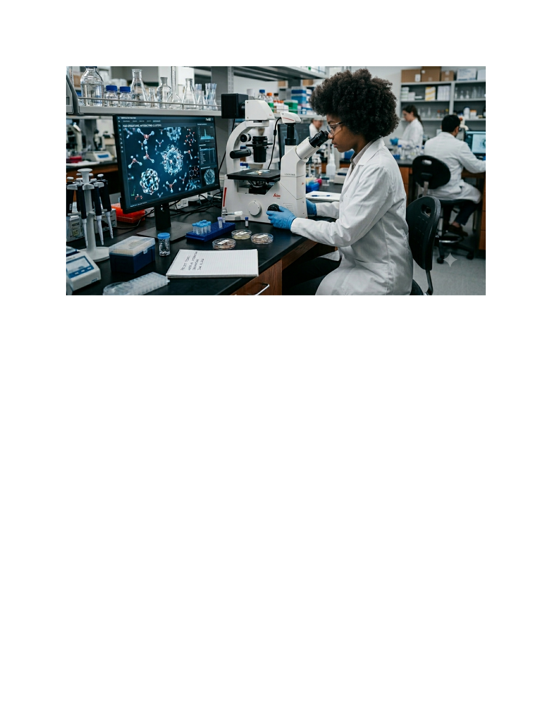

🇺🇸 English
🇫🇷 Français

⚕️
FediEl-AI
FediEl AI — Clinical Pharmacy & Pharmacovigilance Assistant
Secure classroom demonstration
Clinical Pharmacological Screening
🔬 Patient Treatment Regimen / Active Compounds & Student Study Guide Mode:
⚡ Run Pharmacological Screening
AI generated clinical support
📋 Pharmacovigilance Report & PharmD Study Guide Analysis
Enter a regimen to generate an interaction, contraindication, adverse effect, and study-note report.